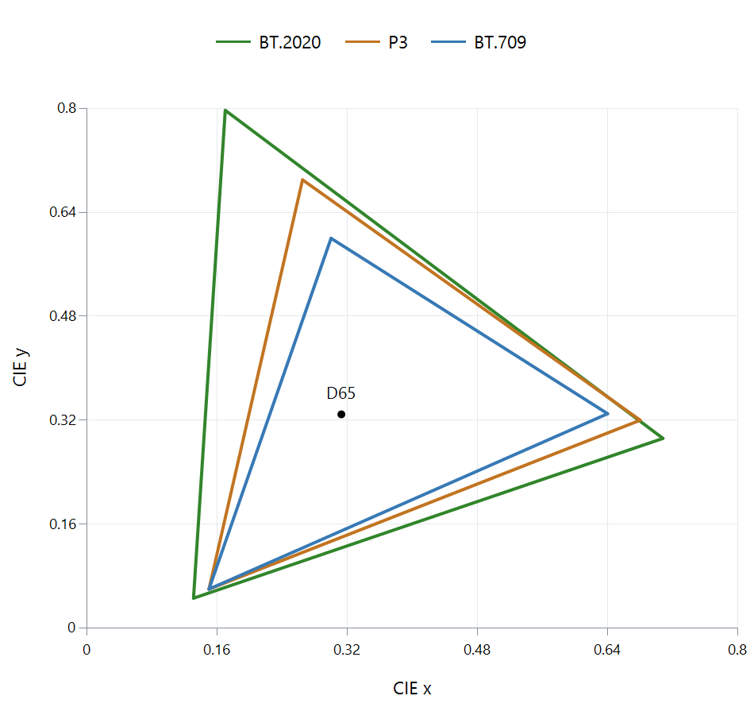

Color Gamut
The points at the corners of an RGB gamut identify its red, green, and blue primaries. Mixing their light produces the colors between them. A wider gamut gives a system coordinates for more saturated colors, such as greens or reds that lie beyond a smaller gamut's boundary.

Primary coordinates in CIE 1931 xy. The colored lines identify the standards; they do not reproduce the extreme colors. Luminance is omitted, and distances on this diagram are not perceptually uniform.
Read the triangle as a set of possibilities
A point inside a triangle can be formed from nonnegative mixtures of that triangle's primaries. On an edge, one primary contributes nothing; at a corner, only that primary contributes. The white point is the mixture that the system treats as its neutral reference.
The same physical color generally has different RGB values in different spaces. The values describe amounts of particular primaries. For example, a green made from a mixture in BT.709 can be represented within BT.2020 by another mixture of its wider primaries. Keeping the numbers unchanged while changing the primaries would ask for a different color.
This distinction explains a useful question about a film: does it use very saturated colors, or can its signal merely represent them? A BT.2020-encoded scene of a gray wall and a face need not use the outer part of the BT.2020 gamut. The encoding defines the available coordinates, while the picture determines which coordinates are occupied.
Three gamuts can appear in one playback session
Consider a movie graded with colors that fit within P3, stored using BT.2020 signal primaries, and played on a television with its own measured gamut. The grading range, encoding space, and display capability describe different stages.
The player first interprets the encoded values in their declared space. It then needs a color-management path to produce those colors on the display. Colors within the display's capabilities can be reproduced using suitable mixtures of its primaries. A color outside those capabilities needs gamut mapping: a choice of an achievable replacement that maintains useful relationships with neighboring colors.
An Emby Direct Play session preserves the delivered encoded video, but the player and screen still perform this interpretation. A larger native display gamut is beneficial when the output path also reproduces smaller encoded gamuts correctly. Stretching a conventional BT.709 image to the screen's outermost primaries would change the intended colors.
What to keep separate when reading specifications
| Property | Question it answers |
|---|---|
| Encoding gamut | Which color coordinates can the signal describe? |
| Measured display gamut | Which chromaticities can this screen reproduce under the test conditions? |
| Bit depth | How finely can values be represented? |
| Color volume | Which colors are available at different light levels? |
A gamut boundary describes the reach of the primaries. Smooth gradients also need adequate precision and processing; bright saturated colors need an adequate color volume. When comparing two systems, keep those questions separate so that a large triangle is interpreted as a color-range property, rather than a complete picture-quality score.